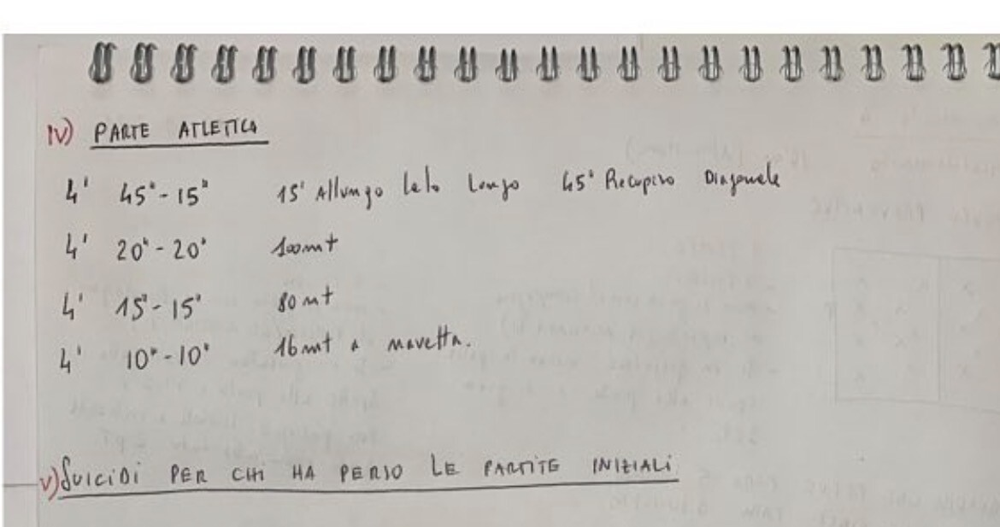

La Juniores che ha vinto il campionato senza perdere una partita
Scorri →
2/4
Esercitazione
La diagonale invertita
Il mister dà palla a X1, che la passa a X2. X2 arriva sul fondo e crossa. La linea si sistema per respingere.
GLI IMBATTIBILIIl calcio a modo mio
3/4
La diagonale invertita
Chi va dove
Il terzino lato palla leggermente sotto la linea della palla
Centrali e terzino opposto in leggera diagonale
Il centrocampista più vicino a cerniera tra terzino e centrale
L'altro centrocampista tra i due centrali
GLI IMBATTIBILIIl calcio a modo mio
GliImbattibili
La Juniores che ha vinto il campionato senza perdere una partita. Gli allenamenti del precampionato, scritti a mano dal mister e messi in pagina.
Salva il post
Seguici per il prossimo

Gli Imbattibili · dai quaderni del mister
Preventiva1
La Juniores che ha vinto il campionato senza perdere una partita
Scorri →
2/4
Esercitazione
Partita “lavoro preventivo”
10 contro 10 su 50 m. Chi riceve nella metà campo offensiva e riesce a girarsi e servire un compagno vale più di un gol. Chi difende deve stargli addosso prima che arrivi la palla.
GLI IMBATTIBILIIl calcio a modo mio
3/4
Partita “lavoro preventivo”
Le regole
2 tempi da 15'
Massimo 3 tocchi
Gol = 1 punto
Chi riceve nella metà campo offensiva, ha il tempo di girarsi e fa un passaggio verticale o diagonale a un compagno: 2 punti
GLI IMBATTIBILIIl calcio a modo mio
GliImbattibili
La Juniores che ha vinto il campionato senza perdere una partita. Gli allenamenti del precampionato, scritti a mano dal mister e messi in pagina.
Salva il post
Seguici per il prossimo
Gli Imbattibili · dai quaderni del mister
8 passaggi= 1 punto
La Juniores che ha vinto il campionato senza perdere una partita
Scorri →
2/4
Esercitazione
Gioco di posizione
4 contro 4 + 2 jolly (il 9 e il 10) in un quadrato di 30 × 30 m. 8 passaggi consecutivi = 1 punto.
GLI IMBATTIBILIIl calcio a modo mio
3/4
Gioco di posizione
Per renderlo difficile
Si gioca a 2 tocchi
I jolly hanno 1 solo tocco
Con meno tocchi bisogna smarcarsi prima e più in fretta
GLI IMBATTIBILIIl calcio a modo mio
GliImbattibili
La Juniores che ha vinto il campionato senza perdere una partita. Gli allenamenti del precampionato, scritti a mano dal mister e messi in pagina.